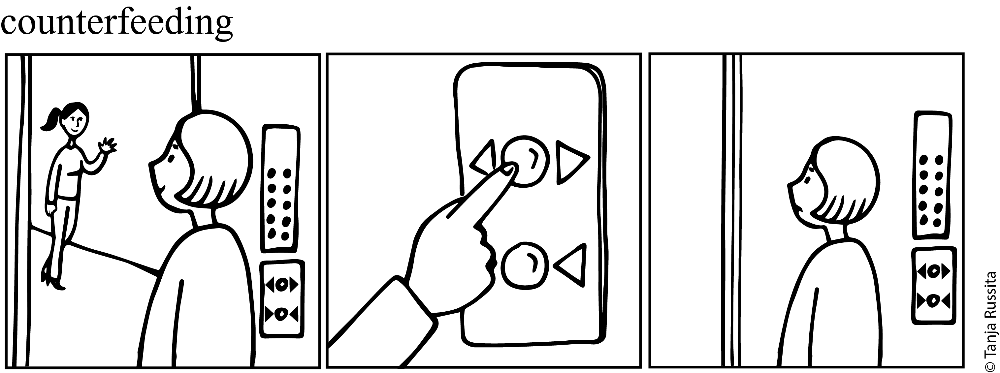
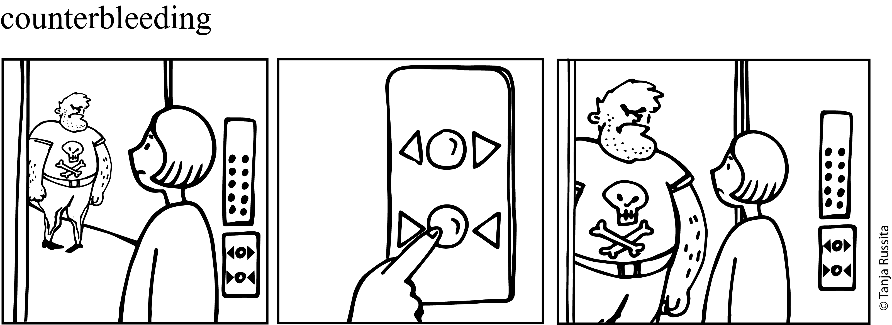

3 Введение в twol: (мор)фонология
Если в слове «хлеб» сделать четыре ошибки, получится «пиво»
3.1 Фонологическое введение
Преобладающая фонологическая теория в XX веке — генеративная фонология (Chomsky и Halle 1968). Согласно этой теории существует два представления: глубинное (underlying/phonological representation) и поверхностное (surface form, phonetic representation). Фонология в этой теории сводится к набору линейно упорядоченных правил, которые применяются циклически, преобразуя результат работы синтаксической деревации в фонетические цепочки.
- глубинное представление > фонологическое правило 1 > фонологическое правило 2 > … > поверхностное представление.
Из-за того, что правила в этой теории строго упорядочены возникают случаи, когда правила взаимодействуют друг с другом. Классификация таких случаев приводится в работе (Kiparsky 1982 (1968)):
- питающий порядок (feeding). Так называют порядок, при котором применение одного правила увеличивает количество контекстов применение другого правила, так что другое правило срабатывает. 1
- блокирующий порядок (bleeding). Так называют порядок, при котором применение одного правила уменьшает количество контекстов применения другого правила, так что другое правило не срабатывает. 2
- противопитающий порядок (counterfeeding). Так называют порядок, при котором применение одного правила увеличивает количество контекстов применение другого правила, однако другое правило не срабатывает.
- противоблокирующий порядок (counterbleeding). Так называют порядок, при котором применение одного правила уменьшает количество контекстов применения другого правила, однако другое правило все равно срабатывает.
Вот комиксы, которые по нашей задумке должны дополнительно иллюстрировать разницу между разными порядками.




3.2 Двухуровневая фонология/морфология
Двухуровневая фонология/морфология (two level morphology) была разработана в диссертации (Koskenniemi 1983). Стоит отметить, что мы используем данный формализм для моделирования (мор)фонологических правил, однако данный формализм называют двухуровневой морфологией (в том числе и сам автор). Вообще, еще в 1972 вышла диссертация (Johnson 1972), в которой автор указывал на некоторые недостатки последовательности фонологических правил, которые были приняты в генеративной фонологии, а также доказывал, что любую последовательность правил можно моделировать при помощи трансдьюсера, однако эта работа осталась незамеченной.
В рамках двухуровневой фонологии/морфологии:
- правила — посимвольные ограничения на поверхностное представление, которые применяются параллельно.
- правила могут оперировать единицами глубинного (другое название — лексическое) представления, поверхностного представления или одновременно обоих.
Например, получить из глубинной формы spy>s поверхностную форму spies можно двумя правилами (нотацию мы подробнее обсудим позже):
y:i <=> _ 0:e0:e <=> y: _ %>:0
Первое правило обращается одновременно к глубинному (0:) и поверхностному (:e) представлениям. Второе правило обращается только к глубинному представлению (y:) и поверхностному (%>:0) представлениям.
Использование ограничений, вместо правил, чуть позже возникла в фонологии в виде Теории оптимальности (OT, (Prince и Smolensky 1994)), однако в рамках OT предпалагаются, что ограничения носят универсальный характер и есть во всех языках, в то время, как ограничения двухуровневой фонологии/морфологии — имеют частный внутриязыковой характер.
3.3 Программа twol
В данном разделе мы будем обсуждать синтаксис twol. Данный раздел основан на (Beesley и Karttunen 2003). Кроме того Элен Картина обратила мое внимание на пакет twol для Python, разработанный Киммо Коскенниэми, автором twol.
3.3.1 Техническое введение
Мы будем использовать программу hfst-twolc. Чтобы избежать сложностей на начальных этапах курса, мы решили вначале познакомиться с синтаксисом twol и попробовать описывать разные языковые явления, не затрудняя всех установкой и запуском нужных программ у себя на компьютере.
- Для начала работы следует, как и раньше, скачать
Makefile:
```{shell}
$ curl -s https://raw.githubusercontent.com/agricolamz/2026_morphological_transducers/refs/heads/main/task_tests/Makefile -o Makefile; make
```- дальше, как и раньше, следует создать в колабе или у себя на компьютере (если у вас Linux), файл с названием
task.lexd. В Google Colab для этого достаточно вставить первой строкой кодового блока%%writefile task.lexd. Вот пример такого файла:
```{lexd}
PATTERNS
Noun (Suffix[-adj] | (Suffix[adj] Inflection))?
LEXICON Noun
ночь
печь
LEXICON Suffix
<dim>:ка
<adj>:н[adj]
LEXICON Inflection
<m><sg><nom>:ой
```- нововведением является возможность создания файла с названием
task.twol, в котором будет содержаться код для обработки (мор)фонологии. Не забудьте вставить%%writefile task.twolв Google Colab. Вот пример такого файла:
```{twol}
Alphabet
а е й к н о п ч ь ь:0;
Rules
"чк чн пишется без ь"
! например, ночьной -> ночной или печька -> печка
ь:0 <=> _ к;
_ н;
```- После того, как вы установили нужные программы и создали файлы, как и раньше, можно посмотреть формы и разборы, которые генерируются трансдьюсером (не забудьте поставить восклицательный знак перед
makeв Google Colab):
```{shell}
$ make forms
ночь<dim>:ночка
ночь<adj><m><sg><nom>:ночной
ночь
печь<dim>:печка
печь<adj><m><sg><nom>:печной
печь
```- Кроме того можно посмотреть анализ/генерацию конкретных форм (не забудьте поставить восклицательный знак перед
makeв Google Colab):
```{shell}
$ make analysis FORM="печка"
hfst-lookup: Warning: It is not possible to perform fast lookups with OpenFST, std arc, tropical semiring format automata.
Using HFST basic transducer format and performing slow lookups
> печка печь<dim> 0,000000
``````{shell}
$ make generation FORM="ночь<adj><m><sg><nom>"
hfst-lookup: Warning: It is not possible to perform fast lookups with OpenFST, std arc, tropical semiring format automata.
Using HFST basic transducer format and performing slow lookups
> ночь<adj><m><sg><nom> ночной 0,000000
```- Как и раньше, получившийся трансдьюсер можно протестировать:
```{shell}
$ make test_03_01
```- К сожалению, сейчас, если была получена ошибка из программы
twolследует удалить лишние созданные файлы перед тем как приступить к исправлению:
```{shell}
$ make clean
```3.3.2 Структура .twol файла
Каждый .twol файл состоит из нескольких блоков, которые удобно обсуждать на приведенном выше примере:
```{twol}
1Alphabet
2 а е й к н о п ч ь ь:0;
3Rules
4"чк чн пишется без ь"
5! например, ночьной -> ночной или печька -> печка
6ь:0 <=> _ к;
7 _ н;
```- 1
- Раздел, которые перечисляет все используемые символы.
- 2
-
Декларацией конца раздела является точка с запятой, поэтому иногда удобно писать элементы в несколько строчек, особенно если есть некотрые логические блоки. Из примера видно сокращение: одним символом можно записывать идентичные пары входного и выходного символов (т. е.
й:йможно записывать какй). - 3
- Раздел с правилами.
- 4
- Название правила (паразительно, но это обязательный элемент 3).
- 5
- В любом месте файла можно написать комментарий. Начало комментария обозначается восклицательным знаком.
- 6
-
Само правило. Оно обычно имеет следующие элементы: какая-то пара входного/выходного символа (
ь:0), дальше оператор (<=>), дальше контекст (_ к), все это заканчивается точкой с запятой. - 7
- Несколько контекстов для одного правила можно записывать вместе. На всякий случай — отбивка не важна, просто сделал для удобочитаемости.
3.3.3 Раздел алфавита
Хорошо бы, чтобы раздел алфавита содержал все пары символов (по-английски, symbol pairs или feasible pairs) глубинного и поверхностного представлений, которые представлены в вашем материале. Важно отметить, что twol достраивает пары символов из правил, так что программа будет работать и с неполным алфавитом .twol. Для нашего примера достаточно следующего файла:
```{twol}
Alphabet
ь;
Rules
"чк чн пишется без ь"
ь:0 <=> _ к;
_ н;
```Так как под капотом происходит композиция трансдьюсеров (см. Раздел 1.4.2), то символы, которые не участвуют в правилах twol, не будут затронуты. И, единственное, что twol не может восстановить, что у нас есть две сущности: ь:0 и ь:ь.
Однако все это из разряда вредных советов. Если вы моделируете язык или даже его фрагмент, лучше перечислить все символы (и их прописные варианты). Это позволит избежать проблем при анализе некачественных входных данных.
3.3.4 Обращение к разным представлениям
Единцы, которыми манипулирует twol — пары глубинного и поверхносного представления. Поэтому в правилах могут появлятся
- полностью определенные единицы, например,
а:ыилиь:0 - единицы, определенные только на одном из представлений
- глубинном, например,
ы: - поверхностном, например,
:я
- глубинном, например,
- placeholder со значением любой знак:
:(еще можно?)
3.3.5 Архифонемы
Иногда (мор)фонологические проблемы можно решать, не постулируя некоторую конкретную сегментную глубинную форму, а используя, так называемые архифонемы4. Эти единицы записываются в lexd в фигурных скобках, например {А}. Существует конвенция, что если архифонема позже только удаляется, то ее пишут строчными буквами, например, {s}, а если архифонема представляет собой набор поверхностных форм, то ее пишут заглавными буквами, например, {А}. Важно отметить, что в файле .twol фигурные скобки нужно экранировать при помощи знака процента %. Для примера давайте перемоделируем пример из прошлого раздела:
```{lexd}
PATTERNS
NounStem Inflection
LEXICON NounStem
мама:мам
папа:пап
няня:нян{j}
Таня:Тан{j}
LEXICON Inflection
<nom><sg>:{А}
<gen><sg>:{Ы}
<pos>:ин
``````{twol}
Alphabet
а и м н п я Т
%{А%}:а %{А%}:я %{Ы%}:ы %{Ы%}:и %{j%}:0;
Rules
"удаляем маркер мягкой основы"
%{j%}:0 <=> _ ;
"гласные после мягкой основы в именительном"
%{А%}:я <=> %{j%}:0 _ ;
"гласные после мягкой основы в родительном"
%{Ы%}:и <=> %{j%}:0 _ ;
```мама<nom><sg>:мам{А}
мама<gen><sg>:мам{Ы}
мама<pos>:мамин
папа<nom><sg>:пап{А}
папа<gen><sg>:пап{Ы}
папа<pos>:папин
няня<nom><sg>:нян{j}{А}
няня<gen><sg>:нян{j}{Ы}
няня<pos>:нян{j}ин
Таня<nom><sg>:Тан{j}{А}
Таня<gen><sg>:Тан{j}{Ы}
Таня<pos>:Тан{j}ин мама<nom><sg>:мама
мама<gen><sg>:мамы
мама<pos>:мамин
папа<nom><sg>:папа
папа<gen><sg>:папы
папа<pos>:папин
няня<nom><sg>:няня
няня<gen><sg>:няни
няня<pos>:нянин
Таня<nom><sg>:Таня
Таня<gen><sg>:Тани
Таня<pos>:Танин```{lexd}
PATTERNS
NounStem[hard] Inflection[hard]
NounStem[soft] Inflection[soft]
NounStem Inflection[-hard,-soft]
LEXICON NounStem
мама:мам[hard]
папа:пап[hard]
няня:нян[soft]
Таня:Тан[soft]
LEXICON Inflection
<nom><sg>:а[hard]
<nom><sg>:я[soft]
<gen><sg>:ы[hard]
<gen><sg>:и[soft]
<pos>:ин
```Следует обратить внимание, на то, что мы не писали правил для пар {А}:а и {Ы}:ы. twol сам использовал указанные нами переходы во всех контекстах, не специализированных правилом перехода после мягких основ. Это поведение напрямую зависит от оператора, используемого в правиле (см. раздел Раздел 3.3.8).
Архифонемы позволяют моделировать морфонологические правила, так как мы всегда можем вставить единицу {some_name}:0, которая показывает на важную морфонологическую границу, рядом с которой что-то происходит (см. еще Раздел 3.4).
3.3.6 Разделы Sets и Definitions
Раздел Sets — опциональный раздел .twol файла, в котором можно создать группы символов, к которым потом можно обращаться в правилах по имени. Рассмотрим пример моделирования устранение зияния гласных в адыгейском языке (Аркадьев и др. 2009: 27–28):
| <abs> | ‘это не X’ <neg> |
‘это X?’ <q> |
|
|---|---|---|---|
| женщина | шъуз | шъузэп | шъуза |
| мужчина | лIы | лIэп | лIа |
| дом | унэ | унэп | уна |
```{lexd}
PATTERNS
Root Infl
LEXICON Root
шъуз
лIы
унэ
LEXICON Infl
<abs>:
<neg>:эп
<q>:а
``````{twol}
Alphabet
I а з л н п у ш ъ ы э
а:0 ы:0 э:0;
Sets
Vowels = а ы э;
Rules
"устранение зияния гласных"
Vowels:0 <=> _ Vowels;
```лIы<q>:лIа
лIы<neg>:лIэп
лIы<abs>:лIы
унэ<q>:уна
унэ<neg>:унэп
унэ<abs>:унэ
шъуз<abs>:шъуз
шъуз<q>:шъуза
шъуз<neg>:шъузэпОбратим внимание, что Vowels:0 в рамках нашей задачи можно было бы записать экономичнее :0 (см. ниже раздел Раздел 3.3.4). Однако, такое правило при моделировании большего фрагмента грамматики скорее всего может привести к непредвиденным эффектам. Тем более, что такая запись плохо читаема вне контекста.
Определение множеств может содержать имена множеств, определенных ранее. Все перечисленные в множествах единицы должны быть определены в разделе Alphabet.
Определяемые элементы в разделе Sets не могут иметь :. Раскрытие переменных происходит по обычным правилам: если после или до имени переменной не стоит двоеточия, значит он будет раскрываться подобными симвалами (т. е. а перейдет в а:а и т. д.). В нашем примере переменная Vowels в файле .twol раскрылась всеми возможными способами: а – а, а – ы, а – э, ы – ы, ы – э, э – э. Т. е. каждое употребление переменной
Раздел Definitions — опциональный раздел .twol файла, в котором можно давать некоторым левым или правым фрагментам контекста имена, к которым потом можно обращаться в правилах. Это осмысленно, если один и тот же контекст встречается в разных правилах, пример из (Beesley и Karttunen 2003: 29)
```{twol}
...
Definitions
XContext = [ p | t | k | g:k ] ;
YContext = [ m | n | n g ] ;
...
```Кроме того, внутри правил можно создавать свои переменные. Так адыгейский трансдьюсер для устранения зияния гласных можно переписать, опеределяя переменную прямо в правиле, а не в разделе Sets:
```{lexd}
PATTERNS
Root Infl
LEXICON Root
шъуз
лIы
унэ
LEXICON Infl
<abs>:
<neg>:эп
<q>:а
``````{twol}
Alphabet
I а з л н п у ш ъ ы э
а:0 ы:0 э:0;
Rules
"устранение зияния гласных"
Vowels:0 <=> _ [а | ы | э];
where Vowels in (а ы э);
```лIы<q>:лIа
лIы<neg>:лIэп
лIы<abs>:лIы
унэ<q>:уна
унэ<neg>:унэп
унэ<abs>:унэ
шъуз<abs>:шъуз
шъуз<q>:шъуза
шъуз<neg>:шъузэпКажется, что правило можно было бы еще упростить и использовать переменную дважды:
Vowels:0 <=> _ Vowels;
where Vowels in (а ы э);К сожалению, это работает неправильно:
лIы<abs>:лIы
лIы<q>:лIыа
лIы<neg>:лIыэп
унэ<neg>:унэп
унэ<abs>:унэ
унэ<q>:унэа
шъуз<abs>:шъуз
шъуз<q>:шъуза
шъуз<neg>:шъузэп Дело в том, что программа расписывает такое правило следующим образом:
а:0 <=> _ а;
ы:0 <=> _ ы;
э:0 <=> _ э;А для корректной работы, нужно следующее расписывание:
а:0 <=> _ [а ы э];
ы:0 <=> _ [а ы э];
э:0 <=> _ [а ы э];Интересно, почему это работало в случае, если определить переменную в разделе Sets.
Переменных может быть несколько, и после их определения значения у созданных переменных можно соединить, используя аргумент matched. Рассмотрим это на примере палатализации в польском (индоевропейские, славянские):
| признак | нога | рука | |
|---|---|---|---|
| <nom><sg> | cecha | noga | ręka |
| <acc><sg> | cechę | nogę | rękę |
| <dat><sg> | cesze | nodze | ręce |
```{lexd}
PATTERNS
Root Infl
LEXICON Root
cecha<n>:cech
noga<n>:nog
ręka<n>:ręk
LEXICON Infl
<nom><sg>:a
<acc><sg>:ę
<dat><sg>:{dat.sg}e
``````{twol}
Alphabet
a c h e n o g r ę k
k:c g:dz h:sz c:0
%{dat.sg%}:0;
Rules
"палатализация"
C:Cpal <=> _ %{dat.sg%}:0;
where C in (k g h)
Cpal in (c dz sz)
matched ;
"починка диграфа ch -> sz"
c:0 <=> _ h:sz;
"гиперфонема для дательного"
%{dat.sg%}:0 <=> _;
```cecha<n><dat><sg>:cesze
cecha<n><nom><sg>:cecha
cecha<n><acc><sg>:cechę
noga<n><nom><sg>:noga
noga<n><acc><sg>:nogę
noga<n><dat><sg>:nodze
ręka<n><nom><sg>:ręka
ręka<n><acc><sg>:rękę
ręka<n><dat><sg>:ręceВ файле .twol в правиле палатализация были созданы две переменные C и Cpal, которые были определены ниже. Также в этом .twol файле есть пример соответствия одному входному символу многосимвольный выход (g:dz). К сожалению, нельзя определять многосимвольные входные символы кроме как через гиперфонемы. matched в правиле означает, не свободное определение переменных, а определенные отношения, если определено несколько переменных: первый элемент одной переменной соотносится с первым элементом второй переменной и т. д. Если matched убрать, то программа будет генерировать все возможные комбинации.
3.3.7 Операторы и другое
.#.— означает границу слова (как левую так, и правую)- Операторы квантификации
- Оператор
?— ноль или один раз - Оператор
*— ноль и более раз - Оператор
+— один и более раз - Оператор
^n— n раз - Оператор
^n,m— от n до m раз
- Оператор
Операторы квантификации важны, так как позволяют задавать сложные контексты для моделирования дистантных отношений.
- Оператор
\работает как логическое не, например\Vowelsзадает контекст для единц, не входящих в группуVowels.
```{lexd}
PATTERNS
Root
LEXICON Root
aa
ba
la
ma
xa
ya
za
``````{twol}
Alphabet
a b l m x y z a:b;
Sets
X = x y z;
Rules
"change"
a:b <=> \X _;
```aa:bb
ba:bb
xa # есть в X
ya # есть в X
za # есть в X
la:lb
ma:mb- Оператор
|имеет семантику ‘или’, что в данном случае будет работать как объединение множеств
```{lexd}
PATTERNS
Root
LEXICON Root
aa
ba
la
ma
xa
ya
za
``````{twol}
Alphabet
a b l m x y z a:b;
Sets
X = x y z;
Y = y z l m;
Rules
"change"
a:b <=> X | Y _;
```aa
ba
xa:xb # есть в X
ya:yb # есть и в X, и Y
za:zb # есть и в X, и Y
la:lb # есть в Y
ma:mb # есть в YТак в одном из примеров выше для переходов после мягких основ существует одинаковый контекст, так что можно использовать объединение при помощи оператора | (квадратные скобки добавлены для удобочитаемости, работает и без них):
```{twol}
Alphabet
а и м н п я Т
%{А%}:а %{А%}:я %{Ы%}:ы %{Ы%}:и %{j%}:0;
Rules
"удаляем маркер мягкой основы"
%{j%}:0 <=> _ ;
"гласные после мягкой основы"
[ %{А%}:я | %{Ы%}:и ] <=> %{j%}:0 _ ;
``````{twol}
Alphabet
а и м н п я Т
%{А%}:а %{А%}:я %{Ы%}:ы %{Ы%}:и %{j%}:0;
Rules
"удаляем маркер мягкой основы"
%{j%}:0 <=> _ ;
"гласные после мягкой основы в номинативе"
%{А%}:я <=> %{j%}:0 _ ;
"гласные после мягкой основы в генетиве"
%{Ы%}:и <=> %{j%}:0 _ ;
```- Оператор
&имеет семантику ‘и’, что в данном случае будет вызывать пересечение множеств
```{lexd}
PATTERNS
Root
LEXICON Root
aa
ba
la
ma
xa
ya
za
``````{twol}
Alphabet
a b l m x y z a:b;
Sets
X = x y z;
Y = y z l m;
Rules
"change"
a:b <=> X & Y _;
```aa
ba
xa # есть в X
ya:yb # есть и в X, и Y
za:zb # есть и в X, и Y
la # есть в Y
ma # есть в Y- Оператор
-имеет семантику ‘без’, что в данном случае будет вызывать разность множеств
```{lexd}
PATTERNS
Root
LEXICON Root
aa
ba
la
ma
xa
ya
za
``````{twol}
Alphabet
a b l m x y z a:b;
Sets
X = x y z;
Y = y z l m;
Rules
"change"
a:b <=> X - Y _;
```aa
ba
xa:xb # есть в X
ya # есть и в X, и Y
za # есть и в X, и Y
la # есть в Y
ma # есть в Y3.3.8 Операторы правил
Существует 4 оператора правил, однако на практике вам чаще всего понадобиться только первый. В (Beesley и Karttunen 2003) даются следующие определения этим операторам:
a:b <=> l _ r ;- Positive Reading 1: Если появляется пара
a:b, то она должна быть в контекстеl _ r. - Negative Reading 1: Если пара
a:bпоявляется вне контекстаl _ r, программа выдает ошибку. - Positive Reading 2: Если глубинное
aпоявляется в контекстеl _ r, тогда оно должно быть реализовано на поверхностном уровне какb. - Negative Reading 2: Если глубинное
aпоявляется в контекстеl _ rи реализуется на поверхностном уровне чем-то кроме какb, программа выдает ошибку.
- Positive Reading 1: Если появляется пара
a:b => l _ r ;- Positive Reading: Если появляется пара
a:b, то она должна быть в контекстеl _ r. - Negative Reading: Если пара
a:bпоявляется вне контекстаl _ r, программа выдает ошибку.
- Positive Reading: Если появляется пара
a:b <= l _ r ;- Positive Reading: Если глубинное
aпоявляется в контекстеl _ r, тогда оно должно быть реализовано на поверхностном уровне какb. - Negative Reading: Если глубинное
aпоявляется в контекстеl _ rи реализуется на поверхностном уровне чем-то кроме какb, программа выдает ошибку.
- Positive Reading: Если глубинное
a:b /<= l _ r ;- Positive Reading: Глубинное
аникогда не может быть реализовано на поверхностном уровне какbв контекстеl _ r - Negative Reading: Если глубинное
ареализовано на поверхностном уровне какbв контекстеl _ r, программа выдает ошибку.
- Positive Reading: Глубинное
Ниже приводится таблица из (Beesley и Karttunen 2003), которая иллюстрирует поведение операторов:
| оператор | пример 1 | пример 2 | пример 3 | пример 4 |
|---|---|---|---|---|
a:b <=> l _ r; |
lar:lbr | lbr:lbr | ||
a:b => l _ r; |
lar:lbr | lar:lar | lbr:lbr | |
a:b <= l _ r; |
lar:lbr | lbr:lbr | xay:xby | |
a:b /<= l _ r; |
lar:lar | lbr:lbr | xay:xby |
В большинстве случаев нужно использовать оператор <=>. Потребность в других операторах возникает только если есть конфликтующие правила.
3.4 Морфонология
Морфонология может иметь разный вид в языке, в связи с чем, я предлагаю разные трюки для описания их в twol.
- морфонология связана с аффиксом:
root-{morphonology}aff - морфонология связана с определенными корнями:
root{morphonology}-aff- или ввести косвенные основы в
.lexd
- морфонология вызывается взаимодействием определенных корней и аффиксов (око - очи, но яблоко - яблоки):
root{morphonology}-{morphonology}aff- или ввести новые единицы в
.lexd
- уникальные лексемы/формы всегда можно словарно ввести в
.lexd
3.5 Глоссирование
Все это время анализ, который мы получали, содержал исключительно грамматические теги без морфемных границ. Основной разработчик парадигмы правилового морфологического анализа — Apertium — скорее заинтересован в создании переводчиков, поэтому морфемные границы отходят на второй план. Однако ожидание большинства лингвистов все же заключается в том, что морфемные границы в анализе должны быть, так как для них нет другой мотивации вкладываться в работу над морфологическим анализатором, кроме как если у них есть множество неотглоссированных текстов, которые они не хотят глоссировать вручную.
Получается так:
- На вход мы подаем текст на языке.
- На выходе мы получаем множество пар, где каждый элемент это
- анализ с поморфемной разбивкой;
- материал на языке с поморфемной разбивкой.
Отметим, что морфологическая граница традиционно в таких случаях обозначается >. Это не самый удобный для читаемости символ, но его ожидают разные другие полезные инструменты на основе трансдьюсеров. Если мы хотим разработать инструмент для глоссироваания, нам имеет смысл создать два похожих трансдьюсера:
- walk>s — walk<v>><pres><3><sg>
- walks — walk<v>><pres><3><sg>
Один от другого отличается одним правилом в twol.
3.6 Мысли в сторону
Важно отметить, что twol отлично помогает моделировать переходы от глубинного представления в поверхностное, что помогает моделировать (мор)фонологию. Однако не стоит считать двухуровневую фонологию фонологической теорией. Она разрабатывалась прежде всего для практических нужд, а в таком случае все средства хороши. Правила двухуровневой фонологии часто слишком языкоцентричны, и поэтому сложно перейти от них к некоторым обобщениям. Кроме того, отказ от последовательности правил приводит к тому, что получившиеся правила двухуровневой фонологии часто неестественны, так как вынуждены включать в себя работу сразу всех (мор)фонологических процессов языка.
Вот пример питающего порядка из бразильского португальского (индоевропейские).
правило форма транскрипция глосса палатализация bato [bátu] бить-1sg палатализация bate [bátʃi] бить-3sg палатализация ardo [áɾdu] жечь-1sg палатализация arde [áɾdʒi] жечь-3sg эпентеза i pacto [pákitu] соглашение эпентеза i captar [kapitáɾ] взять в плен эпентеза i psicologia [pisikoloʒíɐ] психология А вот взаимодействие правил:
↩︎/kaptáɾ/
взять в плен/áɾdi/
жечь-3sg/advɛ́χsu/
враждебный/futbɔ́w/
футболэпентеза I kapitáɾ — adivɛ́χsu futibɔ́w палатализация — áɾdʒi adʒivɛ́χsu futʃibɔ́w Вот пример питающего порядка из литовского (индоевропейские).
правило транскрипция перевод эпентеза i [at-koːpʲtʲi] прийти эпентеза i [atʲi-tʲeisʲtʲi] присудить эпентеза i [ap-kalʲbʲetʲi] оговорить эпентеза i [apʲi-putʲi] подгнить озвончение [at-praʃʲiːtʲi] спросить озвончение [ad-gautʲi] вернуть озвончение [ap-ʃaukjtji] объявить озвончение [ab-gautji] обмануть А вот взаимодействие правил:
↩︎/ap-putʲi/
подгнить/at-gautʲi/
вернуть/at-duotʲi/
отдать/ap-bʲekʲtʲi/
обежатьэпентеза i apʲi-putʲi — atʲi-duotʲi apʲi-bʲekʲtʲi озвончение — ad-gautʲi — — Если удалить из работающего файла одно из названий правила получится ошибка, в которой самым явным будет часть сообщения
Error: twol.hfst is not a valid transducer file.↩︎Этот термин предложил Н. С. Трубецкой для единиц, находящихся в слабой фонологической позиции и характеризующихся неполным набором признаковых спецификаций (например, оглушение на конце слова в русском). Однако в практике пользователей
lexdиtwolархифонемы — это просто единицы удобные для моделирования. Иногда их используют и для случаев подразумевавшихся Трубецким, например, для моделирования гармонии, но иногда их используют для моделирования других морфонологических сложностей.↩︎